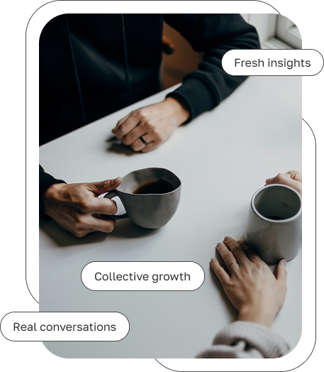
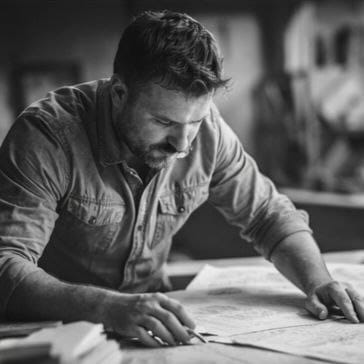
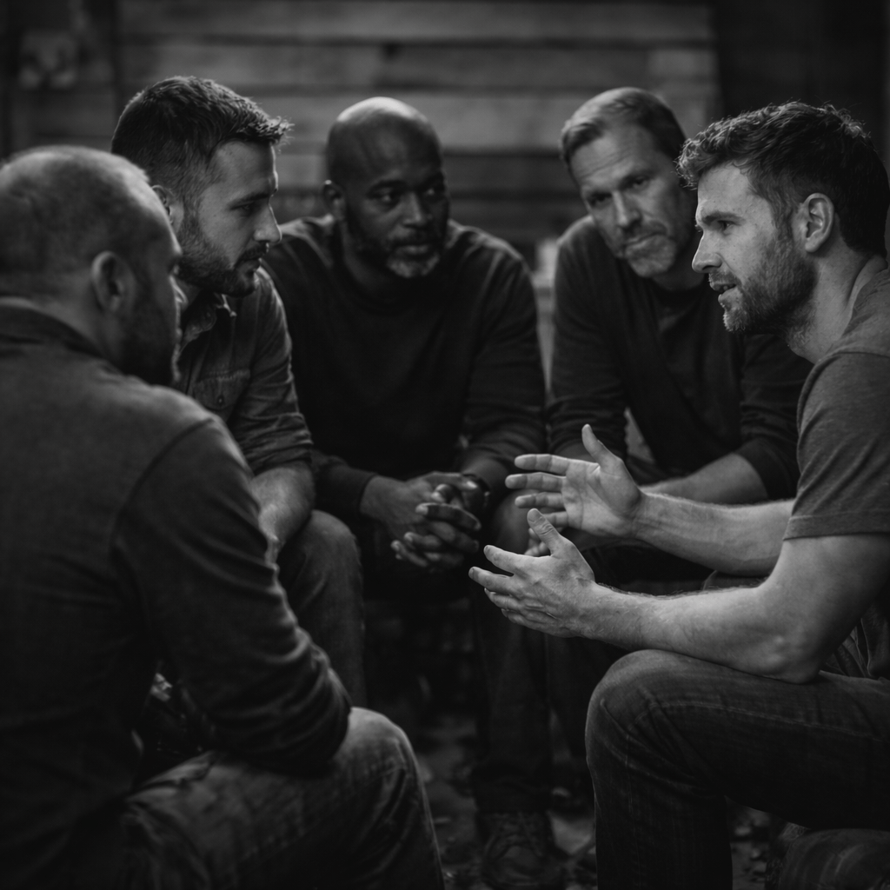

Structured Roundtables
Calls and roundtables are meant to sharpen thinking, remove noise, and move projects toward useful next steps.
Founders Circle is for serious builders who want to help create practical freedom projects rooted in natural law, voluntary cooperation, strong families, and resilient communities.
Apply → Schedule a call → Agreement → Private builder circle
This is the builder path, separate from general mission support.

A private working circle for people who want to build, not just watch.
Calls and roundtables are meant to sharpen thinking, remove noise, and move projects toward useful next steps.
Members bring skills, questions, ideas, and responsibilities into a circle built for voluntary cooperation and practical support.
This is not a casual forum or passive list. Trust is built through consistency, discretion, shared responsibility, and real participation.
Start with a short application so the fit, seriousness, and direction are clear.
If the application is aligned, the next step is an alignment call to talk through fit and expectations.
Accepted members review and complete the private membership association agreement.
Members step into the private circle for calls, collaboration, project development, and practical support.
Founders' Archetypes
Steward of the household & legacy

Bearer of mission & vision

Bond built on trust & loyalty
Bridge to the next generation